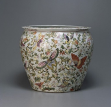

|  | 作品名稱 | 粉彩花蝶魚缸 Famille-rose Fish Barrel with Flowers and Butterflies |
| 作者 | ||
| 年代 | 清道光 Daoguang era, Qing dynasty (late 18th century) | |
| 尺寸 | 15×9.5×6.8 cm | |
| 作品說明 | 碗外觀彩繪吉祥紋樣及壽桃，描繪細膩，釉色淡雅，構圖簡略。粉彩盛於康熙、雍正、乾隆年，尤其雍正年粉彩藝術水準非常高，成為收藏家的收藏對象。以淡雅柔美而名重一時。傳統常見三多果是以佛手、桃、石榴組合紋飾，其中佛手寓意福氣，桃寓意多壽，石榴寓意多子，三者結合寓意為「多福、多壽、多子」。畫中果實與細葉疏密有序，鮮艷欲滴的果實突顯其寓意的主題。 國立歷史博物館典藏品 Collection of National Museum of History |